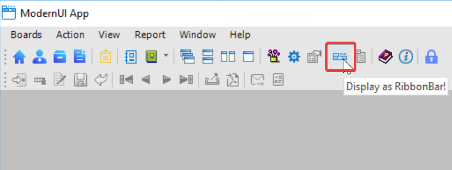
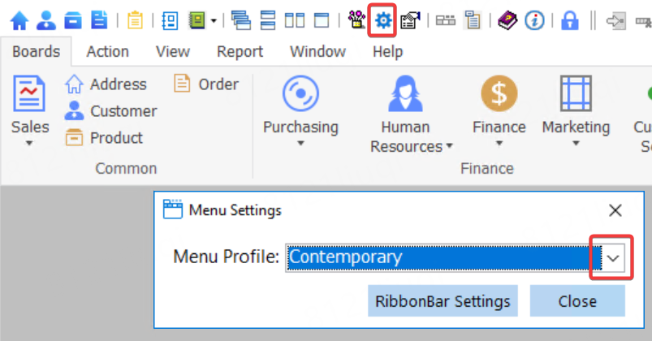
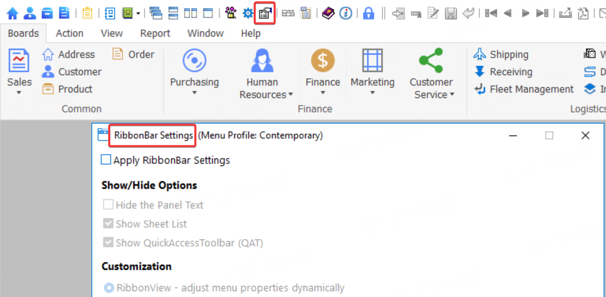

This ModernUI demo application demonstrates techniques to modernize the look and feel of PowerBuilder MDI applications without requiring code changes. One of its key highlights is the new RibbonView feature: If you have a menu in the MDI or MDIHelp window, you can change its display from the menu style to the ribbon bar style, with just a few clicks. (You can learn more details from PowerBuilder Help - What's New - PowerBuilder 2025 - New Features.)
This app uses the classic Menu as the initial state by default. You can preview the effect of the menu first. Go to Help - Menu Settings to manually change the Menu as needed, then click Help - Display as RibbonBar to experience the new feature. You can click Help - Display as Menu to display as menu again.

Notice that the application contains the basic function modules about sales order processing. You can connect to PB Demo DB V2025 (SQL Anywhere) database to run it. To make this demo look closer to a real app, we have added more simulated menu items under the first Menu. Since there are no real Clicked event, they will only show a message.
This is the most recommended part of this new feature: you don't need to adjust any existing code that controls the Enabled/Visible properties of a menu and its toolbar.
Menu's Enabled/Visible properties are always synchronized to the RibbonView.
You can use two users to log in separately to see the effect of the permission-controlled conversion: User Bob has access to all menus by default. User Alice cannot view the Report menu. When opening the Address window, Customer window, etc., you can see that the buttons in the Action category become clickable. The options in the QuickAccessBar are also controlled synchronously.
The ToolbarItemVisible of the Toolbar is always synchronized to the QuickAccessToolbar (QAT) of the RibbonBar.
In the Help - Menu Settings window, you can switch between different common cases of the menu.

These 4 menu profiles are using different default RibbonBar Settings: 1) Contemporary: only uses static settings on menu properties. No RibbonBar settings has been applied. 2) Traditional: use customize code to set menu properties dynamically. 3) File-First and Toolbar-Centric are using XML.
If you have clicked the Help - Display as RibbonBar, you can click the RibbonBar Settings button to open the RibbonBar Settings Window quickly.
In the Help - RibbonBar Settings window. The RibbonBar properties and a few menu extended solution provided are visualized there. You can change the settings for the current menu, save to see the adjusted UI effect.

Show/Hide Options - Whether to show RibbonBar Panel Text/Sheet List/QuickAccessToolbar(QAT).
RibbonView - You can configure RibbonView - Button/Panel settings statically in the menu painter. Except that, you can quickly improve the UI effect by setting the menu properties dynamically by adding some code.
For example: set the default image and default size for menu items, change the panel text, etc.
RibbonBar Converter - When fully customized using XML (exported from Menu, so there are MenuItemName properties that can be used to bind the menu item), you can control all the details that the native RibbonBar function already supports. The customization XML is Menu2RibbonBar\m_frame.xml by default.
Default Selected Category Index - You can specify the default selected category index for the RibbonBar if required.